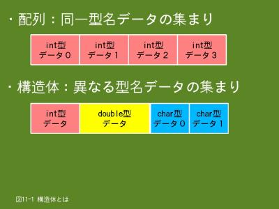

11. 異なる型名データをまとめて取り扱う構造体（1/2）
11.1 構造体とは
- 
- 【図１１-１】構造体とは
沢山のデータを効率よく取り扱うには、配列を使うとよいことは既に説明しました。ただし、配列で取り扱うデータは全て同じ型名でなくてはならないという条件があります。
しかし、異なる型名のデータでも、関連のあるデータはまとめて取り扱いたいことが多々あります。こういった場合、Ｃ言語では構造体というデータ構造が使えます。構造体の場合は複数の異なった型名のデータをまとめて取り扱うことが出来ます。
例えば、図11-1では「int型のデータ」と「double型のデータ」および、「char型の配列」を一つの構造体データとしています。この様に型名に関係なく複数の関連する型のデータをまとめて取り扱うことが出来ます。
配列の場合は個々の要素を指定するには添字を使用しました。これは全ての要素の型名が同じですので、各要素の先頭アドレスは添字を使って簡単に算出できるからです。しかし、構造体の場合は配列の要素に当たる個々のデータの型名は異なりますので、添字を指定しても簡単にアドレスを求めることは出来ません。そこで、個々のデータに対して、ユニークな名前を付けることになります。個々のデータのことをメンバー、その名前をメンバー名と呼びます。
11.2 構造体の宣言
11.2.1 形式
構造体を使う場合も宣言が必要ですが、通常の変数や配列の宣言とは少し異なります。構造体の宣言は基本的には次の手順になります。（この手順を１つにすることもできます）
- 構造体型名の宣言を行います。
- 上記構造体型名を指定して、構造体変数の宣言を行います。
構造体型名の宣言では構造体を構成するメンバーの型名とメンバー名を宣言します。ようするに、構造体型名は設計図に相当するもので、それを元にして実際に作り出したものが構造体変数ということになります。
構造体メンバーの参照と更新はドット演算子（.）とアロー演算子（->）を使って行うことができます。
※ 構造体型名の宣言
struct 構造体型名 {型名 メンバー名１; 型名 メンバー名２; …}; ← 最後は;（セミコロン）です
※ 構造体変数の宣言
struct 構造体型名 構造体変数名 = {初期値１, 初期値２ …};
※ 構造体型名の宣言と構造体変数の宣言を同時に行う
struct 構造体型名 {型名 メンバー名１; 型名 メンバー名２; …} 構造体変数名 = {初期値１, 初期値２ …};
※ メンバーの参照・更新
構造体変数名.メンバー名;
構造体変数名.メンバー名 = 値;
ポインタ変数名->メンバー名;
ポインタ変数名->メンバー名 = 値;
- struct
- 構造体を宣言するための型指定子です。
- 構造体型名
- 構造体の個々のメンバーの型名は異なっていても構わないため、メンバーの型名を構造体の型名にすることは出来ません。そこで、任意の構造体型名を宣言します。構造体型名は自由につけることが出来ます。構造体型名の宣言と構造体変数の宣言を同時に行う場合は、構造体型名を省略出来ます。
- 型名 メンバー名
- メンバーの型名とメンバー名を指定します。配列の指定も出来ます。メンバー毎の区切りは;（セミコロン）です。
- 構造体変数名
- 構造体型名を宣言しただけではメモリー上に実体は確保されていませんので、構造体変数名を宣言することにより、変数としてメモリー上に実体を確保します。また、必要に応じて初期値を指定することもできます。
- .
- 構造体変数名を使ってメンバーを参照・更新する場合はドット演算子（.）を使用します。
- ->
- 予め、ポインタ変数に構造体変数の先頭アドレスを設定しておき、そのポインタ変数を使ってメンバーを参照・更新する場合はアロー演算子（->）を使用します。
構造体は一般的に、複数の関数で共用することが多いため、構造体型名の宣言を関数の外側で行い（外部変数扱い）、構造体変数の宣言を関数内で行う（内部変数扱い）ような使い方になります。
構造体型名は一度宣言しておけば複数の構造体変数の宣言に使用できます。また、構造体型名が同じ構造体変数は代入演算子で代入が可能です。
struct sample
{
int age;
double weight;
};
struct sample v1 = {20, 56.5};
struct sample v2;
v2 = v1; ← 代入可能です
メンバーとして構造体を指定できます。次の例ではsample構造体型名は上記により宣言済みとします。
struct sample_type
{
int number;
double height;
struct sample v3; ← メンバとしてsample構造体型名の構造体を指定します
};
struct sample_type v10;
v10.v3.age = 20; ← v10構造体変数のageメンバーに20を代入します
11.2.2 例題
例題１
肥満度を計算して正常・異常を判定して結果を出力します。身長や体重等の肥満度に関するデータは「bmi_type構造体」に格納します。
#include <stdio.h>
/* 肥満度データを格納する構造体 */
struct bmi_type
{
int number; /* 番号 */
double weight; /* 体重 */
double height; /* 身長 */
double bmi; /* 肥満度 */
char judge; /* 肥満状態（正常 … 'n'、低 … 'l'、高 … 'h'） */
};
int main(void)
{
struct bmi_type bmi_in = {
1, /* 番号 */
0.0, /* 体重 */
0.0, /* 身長 */
0.0, /* 肥満度 */
' '}; /* 肥満状態 */
struct bmi_type bmi_out;
int return_code;
/* CalcBmiEx関数のプロトタイプ宣言 */
struct bmi_type CalcBmiEx(struct bmi_type Bmi);
printf("肥満度(BMI)の計算を行います\n");
printf("体重(kg)と身長(cm)を入力してください ==> ");
scanf("%lf%lf", &bmi_in.weight, &bmi_in.height);
bmi_out = CalcBmiEx(bmi_in);
if(bmi_out.bmi > 0.0)
{
printf("肥満度は%.2fです。", bmi_out.bmi);
switch(bmi_out.judge)
{
case 'n':
printf("正常です。\n");
break;
case 'l':
printf("低すぎます。\n");
break;
case 'h':
printf("高すぎます。\n");
break;
default:
printf("\n");
}
return_code = 0;
}
else
{
printf("入力した値が不当です\n");
return_code = 1;
}
return return_code;
}
/* 体重と身長を元に肥満度(BMI)の計算を行iい、正常かどうかの判定を行う*/
struct bmi_type CalcBmiEx(struct bmi_type pBmi)
{
double height;
/* 体重と身長の値をチェック */
if (pBmi.weight > 0.0 && pBmi.height > 0.0)
{
/* 身長をセンチメートルからメートルに変換 */
height = pBmi.height / 100.0;
/* 肥満度(BMI) = 体重(kg) / 身長(m) / 身長(m) */
pBmi.bmi = pBmi.weight / height / height;
/* 肥満度が18.5〜25.5の範囲であれば正常 */
if(pBmi.bmi >= 18.5 && pBmi.bmi <= 25.0)
{
pBmi.judge = 'n'; /* 正常 */
}
else
{
if(pBmi.bmi > 25.0)
{
pBmi.judge = 'h'; /* 高い */
}
else
{
pBmi.judge = 'l'; /* 低い */
}
}
}
else
{
pBmi.bmi = 0.0;
pBmi.judge = ' ';
}
return pBmi; /* 肥満度構造体変数を返り値として返す */
}
$ ./ex11_1.prg
肥満度(BMI)の計算を行います
体重(kg)と身長(cm)を入力してください ==> 67.5 188
肥満度は19.10です。正常です。
$
$ ./ex11_1.prg
肥満度(BMI)の計算を行います
体重(kg)と身長(cm)を入力してください ==> 67.5 159.5
肥満度は26.53です。高すぎます。
$
- 3〜10行目
- 肥満度に関するデータを管理するためのbmi_type構造体型名の宣言です。関数の外側で宣言していますので、この行以降からソースファイルの最後まで有効です。
- 14〜19行目
- bmi_type構造体型名を使用してbmi_in構造体変数の宣言を行います。初期値も指定しています。この構造体変数はmain関数内で宣言していますので、有効範囲はこの間数内です。
- 20行目
- bmi_type構造体型名を使用してbmi_out構造体変数の宣言を行います。
- 23行目
- CalcBmiEx関数の関数プロトタイプ宣言です。返り値はbmi_type構造体型名の構造体で、引数もbmi_type構造体型名の構造体です。引数は値渡しですので、構造体のコピーが関数に渡ります。
- 27行目
- bmi_in構造体変数のweightメンバーとheightメンバーに体重と身長を入力します。&bmi_in.weightでbmi_in構造体変数のweightメンバーの先頭アドレスを指定することになります。
- 29行目
- CalcBmiEx関数を呼び出します。引数はbmi_in構造体変数で、返り値はbmi_out構造体変数に代入します。この結果bmi_out構造体変数にはCalcBmiEx関数で求めた肥満度情報が格納されます。
- 30行目
- bmi_out構造体変数のbmiメンバー（肥満度）の値をチェックします。bmi_out.bmiでbmi_out構造体変数のbmiメンバーの値の参照になります。
- 59行目
- 以降、CalcBmiEx関数の定義です。返り値も引数もbmi_type構造体型名です。
- 64行目
- 引数で渡された体重と身長の値をチェックします。pBmi.weightでpBmi構造体変数のweightメンバーを参照することになります。pBmiは引数ですので、間接的にmain関数のbmi_in構造体変数のweightメンバーを参照したことになります。
- 93行目
- 返り値としてpBmi構造体変数の値を返します。
例題２
上記例題のCalcBmiEx関数の引数は値渡しですので、実引数に指定した構造体変数のコピーが仮引数になります。通常、構造体変数の容量は大きくなりがちですので、それをコピーするのは性能上問題になることがあります。このことから、構造体を引数にするときには参照渡しにすることが多いようです。
次の例題は上記例題と機能は同じですが、CalcBmiEx関数の返り値と引数をbmi_type構造体型のポインタにしています。
#include <stdio.h>
/* 肥満度データを格納する構造体 */
struct bmi_type
{
int number; /* 番号 */
double weight; /* 体重 */
double height; /* 身長 */
double bmi; /* 肥満度 */
char judge; /* 肥満状態（正常 … 'n'、低 … 'l'、高 … 'h'） */
};
int main(void)
{
struct bmi_type bmi_in = {
1, /* 番号 */
0.0, /* 体重 */
0.0, /* 身長 */
0.0, /* 肥満度 */
' '}; /* 肥満状態 */
struct bmi_type *bmi_out;
int return_code;
/* CalcBmiEx関数のプロトタイプ宣言 */
struct bmi_type *CalcBmiEx(struct bmi_type *Bmi);
printf("肥満度(BMI)の計算を行います\n");
printf("体重(kg)と身長(cm)を入力してください ==> ");
scanf("%lf%lf", &bmi_in.weight, &bmi_in.height);
bmi_out = CalcBmiEx(&bmi_in);
if(bmi_out->bmi > 0.0)
{
printf("肥満度は%.2fです。", bmi_out->bmi);
switch(bmi_out->judge)
{
case 'n':
printf("正常です。\n");
break;
case 'l':
printf("低すぎます。\n");
break;
case 'h':
printf("高すぎます。\n");
break;
default:
printf("\n");
}
return_code = 0;
}
else
{
printf("入力した値が不当です\n");
return_code = 1;
}
return return_code;
}
/* 体重と身長を元に肥満度(BMI)の計算を行iい、正常かどうかの判定を行う*/
struct bmi_type *CalcBmiEx(struct bmi_type *pBmi)
{
static struct bmi_type bmi_out;
double height;
/* 番号、体重、身長の値を格納 */
bmi_out.number = pBmi->number;
bmi_out.weight = pBmi->weight;
bmi_out.height = pBmi->height;
/* 体重と身長の値をチェック */
if (bmi_out.weight > 0.0 && bmi_out.height > 0.0)
{
/* 身長をセンチメートルからメートルに変換 */
height = bmi_out.height / 100.0;
/* 肥満度(BMI) = 体重(kg) / 身長(m) / 身長(m) */
bmi_out.bmi = bmi_out.weight / height / height;
/* 肥満度が18.5〜25.5の範囲であれば正常 */
if(bmi_out.bmi >= 18.5 && bmi_out.bmi <= 25.0)
{
bmi_out.judge = 'n'; /* 正常 */
}
else
{
if(bmi_out.bmi > 25.0)
{
bmi_out.judge = 'h'; /* 高い */
}
else
{
bmi_out.judge = 'l'; /* 低い */
}
}
}
else
{
bmi_out.bmi = 0.0;
bmi_out.judge = ' ';
}
return &bmi_out; /* 肥満度構造体変数の先頭アドレスを返り値として返す */
}
$ ./ex11_2.prg
肥満度(BMI)の計算を行います
体重(kg)と身長(cm)を入力してください ==> 72.5 187.0
肥満度は20.73です。正常です。
$ ./ex11_2.prg
肥満度(BMI)の計算を行います
体重(kg)と身長(cm)を入力してください ==> 0 0
入力した値が不当です
$
- 20行目
- CalcBmiEx関数の返り値を格納するbmi_type構造体型名のポインタ変数を宣言します。
- 23行目
- CalcBmiEx関数の関数プロトタイプ宣言です。返り値はbmi_type構造体型名のポインタで、引数もbmi_type構造体型名のポインタです。引数は参照渡しですので、構造体の先頭アドレスが関数に渡ります。
- 29行目
- CalcBmiEx関数を呼び出します。引数はbmi_in構造体変数の先頭アドレスで、返り値はポインタ変数のbmi_outに代入します。この結果bmi_outにはCalcBmiEx関数で求めた肥満度情報が格納されている構造体の先頭アドレスが格納されます。
- 30行目
- CalcBmiEx関数で算出した肥満度の値をチェックします。bmi_out->bmiでポインタ変数bmi_outの指し示す構造体のbmiメンバーの値の参照になります。
- 59行目
- 以降、CalcBmiEx関数の定義です。返り値も引数もbmi_type構造体型名のポインタです。
- 61行目
- この関数内で使うbmi_type構造体型名の構造体変数を宣言します。この構造体の先頭アドレスを返り値として返しますので、記憶クラス指定子のstaticを付けて関数内静的変数にしています。（関数の実行終了後も変数領域が残るようにするためです）
- 65行目
- 引数はポインタですので、アロー演算子（->）を使ってメンバーの値を参照します。
- 99行目
- bmi_out構造体変数の先頭アドレスを返り値として返します。